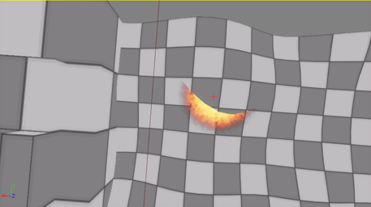
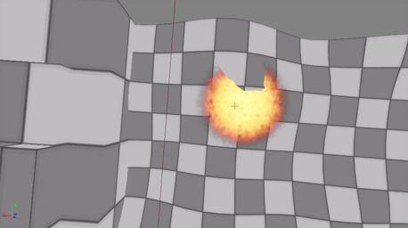
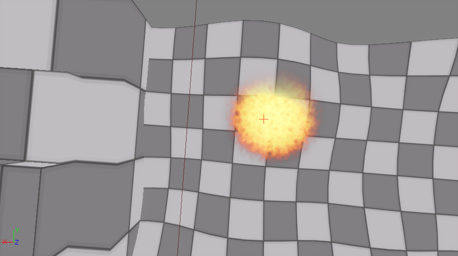
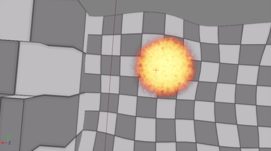
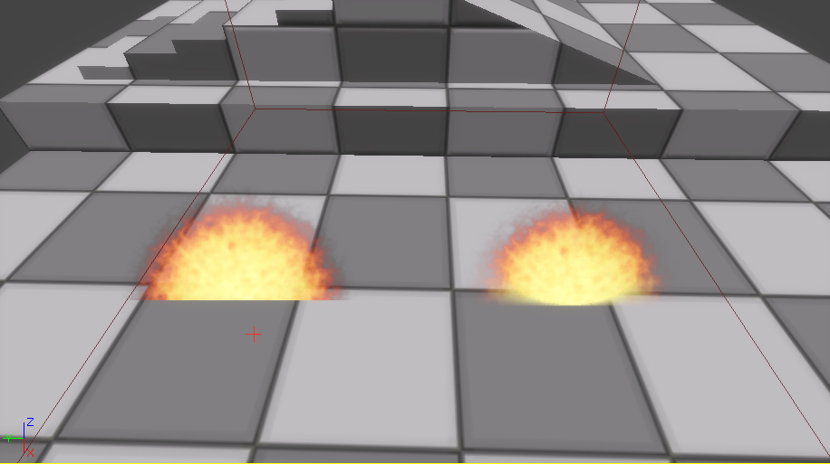
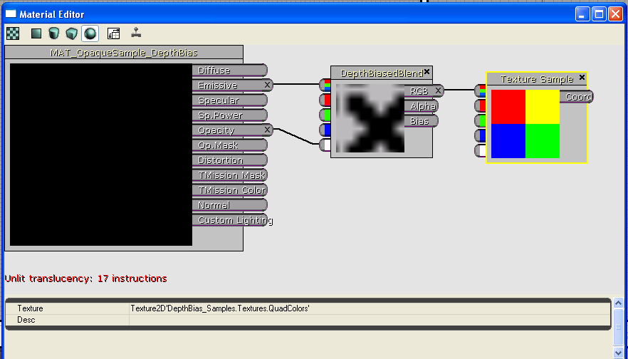

UDN
Search public documentation:
DepthBiasBlendUsageCH
English Translation
日本語訳
한국어
Interested in the Unreal Engine?
Visit the Unreal Technology site.
Looking for jobs and company info?
Check out the Epic games site.
Questions about support via UDN?
Contact the UDN Staff
日本語訳
한국어
Interested in the Unreal Engine?
Visit the Unreal Technology site.
Looking for jobs and company info?
Check out the Epic games site.
Questions about support via UDN?
Contact the UDN Staff
深度偏移混合(Depth Bias Blending)材质表达式
概述
if (DestinationDepth < SourceDepth)
{
FinalColor = DestinationColor; //不描画源像素
}
else
if (SourceDepth < (DestinationDepth - ((1 - Bias) * BiasScale)))
{
FinalColor = SourceColor; //描画源像素
}
else
{
FinalColor = LinearInterpolation(DestinationColor, SourceColor,
((DestinationDepth - Source Depth) / ((1 - Bias) * BiasScale)));
}
这种混合类型的最显著的一个应用是消除平面粒子和几何体相交是产生的尖锐的边缘。我们将使用这个情况来提供一个使用DepthBiasBlend(深度偏移混合)表达式的示范。
示例
源图片和发射器
发射器将会每隔5秒发射一个生命周期为4.5秒的单独粒子。发射器actor放置在关卡中，以便粒子可以从关卡的‘地面’喷出来。粒子使用以下贴图： 图片1: 使用的源贴图
(图片的透明度在右侧。）
图片1: 使用的源贴图
(图片的透明度在右侧。）
存在问题的示例
应用到平面粒子上的简单材质如下所示： 图片2: 标准的平面粒子材质
应用这种材质的粒子系统在 Cascade视口中看上去很好。然而，当把发射器放置到关卡中时，出现了问题。无论何时当粒子穿入到关卡中的几何体时都会产生硬边。结果如下所示：
图片2: 标准的平面粒子材质
应用这种材质的粒子系统在 Cascade视口中看上去很好。然而，当把发射器放置到关卡中时，出现了问题。无论何时当粒子穿入到关卡中的几何体时都会产生硬边。结果如下所示：

图片3: 标准的粒子/几何体的交叉效果- 拍摄 1
图片4: 标准的粒子/几何体的交叉效果- 拍摄 2 图片5: 标准的粒子/几何体的交叉效果- 拍摄 3
注意当平面粒子正在穿入关卡中的几何体时产生了硬边。
图片5: 标准的粒子/几何体的交叉效果- 拍摄 3
注意当平面粒子正在穿入关卡中的几何体时产生了硬边。
新方法
应用到平面粒子上的新材质可以使用DepthBiasBlend(深度偏移混合)表达式，如下所示： 图片6: 基于DepthBiasBlend (深度偏移混合)表达式的材质
DepthBiasBlend(深度偏移混合)继承于TextureSample(贴图样本)表达式，所以源贴图可以通过简单地在通用浏览器中选择一个材质来进行设置，然后右击表达式并选择"Use Current Texture(使用当前贴图)"。
Coord(坐标)输入端是标准的Texture Coordinate(贴图坐标)选项。对于粒子的情况，这项应该‘空着’以便可以使用第一个UV集合。
Bias(偏移)输入端提供了源像素偏移量 – 当物体相互穿透时，这个值被插入到上面的等式中，从而使得发生‘混合’变换。它可以是任何可以产生一个单独的浮点值的表达式组合。在这个例子中，使用了源图片的alpha通道。这意味着在每个像素上，源贴图将会对alpha值进行采样，并且会使用采样得出的值作为偏移。
DepthBiasBlend(深度偏移混合)表达式的BiasScale(偏移缩放比例)参数可以缩放偏移量，从而可以控制特效的细微变化。在这个例子中，为了更加清晰地示范特效，所以偏移缩放比例设置的相对较高(200.0)。
材质表达式的BlendMode(混合模式)必须是半透明，即使贴图是不透明的。（注意： 这个以后也许会改变，但是到创建这篇文档为止仍然时这种情形。) 这样做是为了保证使用这个材质的物体在目标缓存中已经有和它进行混合的值时会被渲染。当要混合一个不透明贴图时，可以设置BlendMode(混合模式)为Translucent(半透明)，然后向半透明通道中插入一个Constant(常量)表达式1.0。
[重要注意事项: 目前这个表达式将不会显示在缩略图渲染或者预览窗口中。这是因为在那时发生了清除操作。这是一个已知问题，并且已经放在了数据库中。]
应用到发射器上的新材质产生了以下效果：
图片6: 基于DepthBiasBlend (深度偏移混合)表达式的材质
DepthBiasBlend(深度偏移混合)继承于TextureSample(贴图样本)表达式，所以源贴图可以通过简单地在通用浏览器中选择一个材质来进行设置，然后右击表达式并选择"Use Current Texture(使用当前贴图)"。
Coord(坐标)输入端是标准的Texture Coordinate(贴图坐标)选项。对于粒子的情况，这项应该‘空着’以便可以使用第一个UV集合。
Bias(偏移)输入端提供了源像素偏移量 – 当物体相互穿透时，这个值被插入到上面的等式中，从而使得发生‘混合’变换。它可以是任何可以产生一个单独的浮点值的表达式组合。在这个例子中，使用了源图片的alpha通道。这意味着在每个像素上，源贴图将会对alpha值进行采样，并且会使用采样得出的值作为偏移。
DepthBiasBlend(深度偏移混合)表达式的BiasScale(偏移缩放比例)参数可以缩放偏移量，从而可以控制特效的细微变化。在这个例子中，为了更加清晰地示范特效，所以偏移缩放比例设置的相对较高(200.0)。
材质表达式的BlendMode(混合模式)必须是半透明，即使贴图是不透明的。（注意： 这个以后也许会改变，但是到创建这篇文档为止仍然时这种情形。) 这样做是为了保证使用这个材质的物体在目标缓存中已经有和它进行混合的值时会被渲染。当要混合一个不透明贴图时，可以设置BlendMode(混合模式)为Translucent(半透明)，然后向半透明通道中插入一个Constant(常量)表达式1.0。
[重要注意事项: 目前这个表达式将不会显示在缩略图渲染或者预览窗口中。这是因为在那时发生了清除操作。这是一个已知问题，并且已经放在了数据库中。]
应用到发射器上的新材质产生了以下效果：
 图片7: 新的 粒子/几何体 交叉 – 拍摄 1
图片7: 新的 粒子/几何体 交叉 – 拍摄 1

图片8: 新的 粒子/几何体 交叉 – 拍摄 2
图片8: 新的 粒子/几何体 交叉 – 拍摄 3 以下的屏幕截图对两个版本的发射器进行了并行的对比：
图片9: 并行对比使用注意事项：
- 材质表达式DepthBiasBlend(深度偏移混合)的开销并不便宜。它一次会使用15个额外的指令 – 当创建使用这个表达式的材质时一定要考虑这个问题。重要更新

图片10: 不透明DepthBiasedBlend (深度偏移混合)材质 以下是使用新表达式实现的半透明材质的粒子，如下所示： 图片11: 半透明DepthBiasedBlend (深度偏移混合)材质
图片11: 半透明DepthBiasedBlend (深度偏移混合)材质